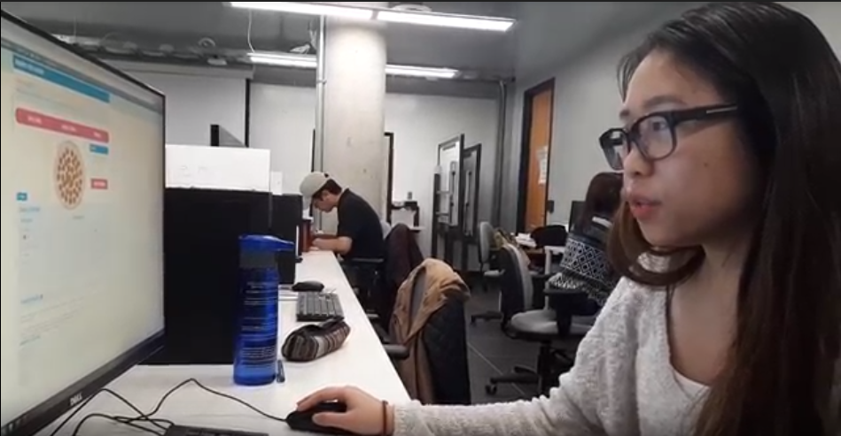
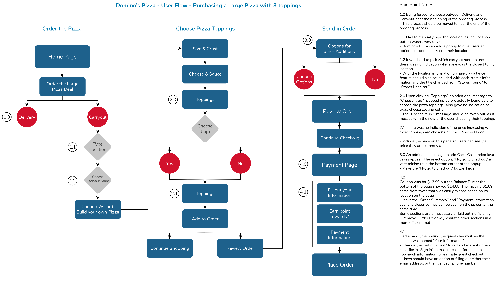
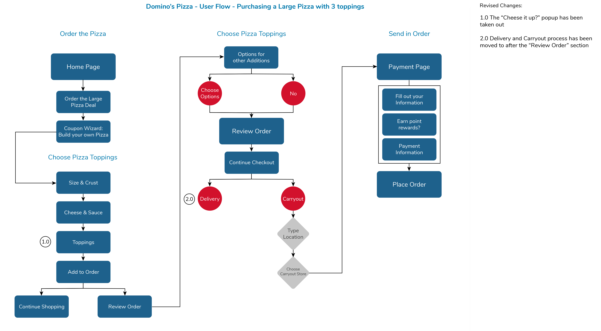

Domino's Pizza UX case study
UX
The Challenge
Hold user testing sessions with two of the same types of web services and re-design one of them.Domino’s is an American pizza chain that I analyzed along with two other fellow designers. We held a user testing session for both Domino’s and Pizza Pizza in order to compile data on pain points and what the user found effortless/liked. We then proceeded with Domino’s for this case study. In this case study, we analyze the user experience, the current interface design of the application and re-design it.
The Research
The Job Stories
Before we started our user research, we created job stories in order to understand why the user would want to order pizza online. What are the situations and/or thoughts that the user goes through that leads them to order online?
The User
Elicia was our user tasked with ordering a large pizza for carry out. For this user testing session, she was video recorded when completing the task and further interviewed for her thoughts on Domino’s online delivery website. Elicia started with a Domino’s deal: large pizza with four toppings.🍕
What Elicia found effortless
- Finding deals/coupons
- Finding the 'order' button
- Choosing pizza toppings
The pain points
- Choosing a delivery method was at the very beginning of the process. The user was slightly confused with this and wondered why it was first. She would like to have it so that she makes her pizza as the first step.
- The user was not sure how the list of store locations was organized. She googled the first two locations to see which one was the closest to her.
- There was no indication of an increase in price, when the user put on more toppings.
- Had a difficult time looking for the guest checkout.
Before and after
The userflow chart
We documented Domino’s current user flow when a user is ordering online for carryout in order to have a visual. Based on the user's video recording and feedback, we then pinpointed areas where improvements should be made and re-designed the user flow.
The original
Our revision
Design and ideation
My wireframe sketches
Wireframes
Thanks to the user feedback and revised user flow, I was able to understand what we were aiming to solve and change when approaching the wireframes.
Pizza helper
- Add the price of the pizza, which changes when toppings are added and taken out
- Dot navigation added to the side in order to show the steps of the pizza ordering process
Review Order
- Extra Coke item is taken out and replaced with another Domino’s side item
- ‘Food & Beverage’ is removed from when calculating the price of the order
- ‘Add more items’ button is added under the items detail area
Delivery method
- Center ‘delivery’ and ‘carryout’ icons in the middle
- When ‘carryout’ is chosen, the map is loaded and a pop-up requesting permission to use the user’s location is utilized.
- ‘Delivery hours’ and ‘carryout hours’ are put into one section called ‘hours of operation’
- ‘Order carryout’ button and carryout icon aligned and put together
Payment page
- Order summary is on top and enlarged
- Order review box is removed
- Food & Beverages is removed from pricing
Learned outcomes
Through the completion of this project, I found how important it was to observe the user while they fulfilled the task. You can get a lot of information just from looking at the user’s facial expressions, the eyebrows and their verbal reactions.